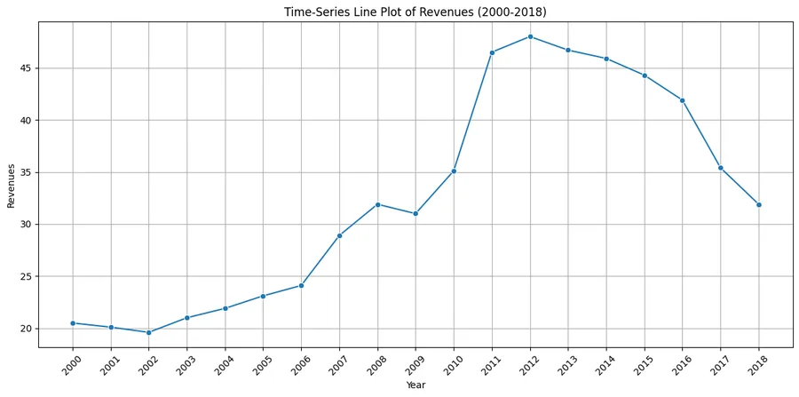
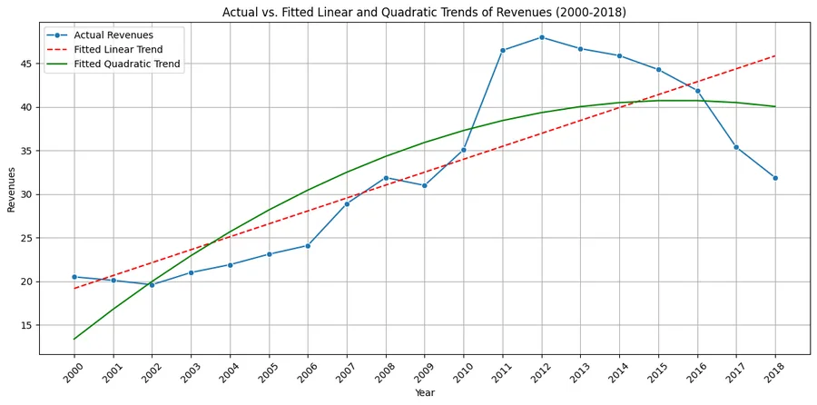

Back to all analyses
Revenue forecasting
I compared six forecasting models using the same revenue data.
- Python
- statsmodels
- Time series
- Autocorrelation (ACF)
Key results
19 yearsof annual revenue, 2000 to 2018
AR(2)the best model by mean absolute deviation
2.08 vs 5.03mean absolute deviation, AR(2) versus the linear trend
59% loweraverage error than the linear trend, over 2003 to 2018
Findings & method
What I found
- The shape of the series: revenue dipped slightly from 2000 to 2002, rose strongly until about 2012 to 2013, then declined through 2018. A straight line or a steady growth rate cannot follow that.
- The linear trend fails visibly. Its residuals form a clear S-shape and show strong autocorrelation. The exponential trend, at about 5.0% growth a year, has the same problem.
- The quadratic trend captures the curve, with a significant squared term (p = 0.033) and fewer residual patterns, but it still fits worse than the autoregressive models.
- AR(2) wins. Revenue this year ≈ 4.57 + 1.386 × last year − 0.516 × two years ago. Adding a third lag did not help (p = 0.72 for the third lag, mean absolute deviation 2.21).
Model comparison, 2003 to 2018
Mean absolute deviation, lower is better. In-sample fit over 16 years.


quadratic_model = smf.ols('Revenues ~ t + t_squared', data=df_model).fit()
ar1_model = smf.ols('Revenues ~ Lag1', data=df_model).fit()
ar3_model = smf.ols('Revenues ~ Lag1 + Lag2 + Lag3', data=df_model).fit()Limits: the comparison is in-sample over 16 years. A hold-out test on the most recent years would be the next step before trusting any forecast.